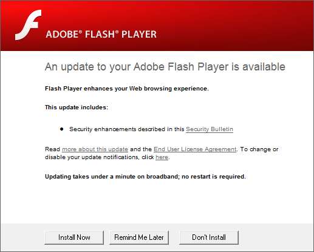
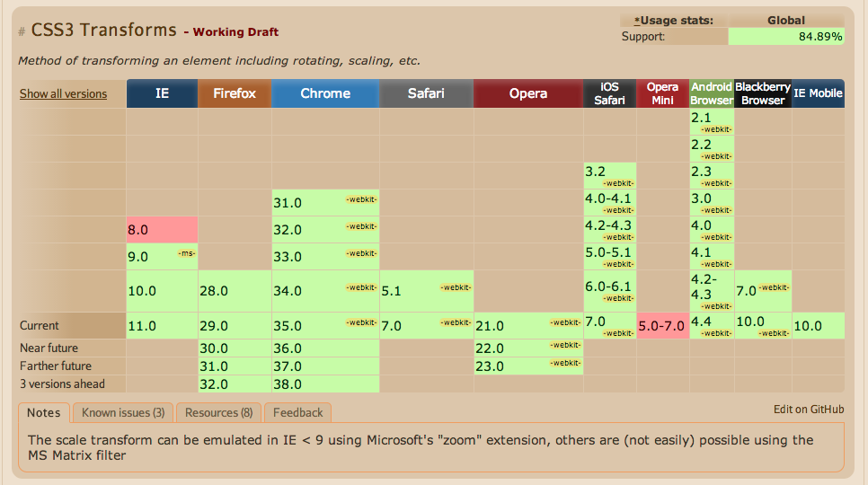

Introduction to CSS Animations
Your Instructor:
Overview
- History
- Flash
- Transitions
- Keyframes
- 3D
The History
Safari 2007
Spec 2009
Pushed by Apple
A pluginless web
Apple's Choice
Rather than use Flash, Apple has adopted HTML5, CSS and JavaScript – all open standards. Apple’s mobile devices all ship with high performance, low power implementations of these open standards-Steve Jobs
Hover Pseudo Class Selectors
div {
background-color: #1BA0FF;
}
div:hover {
background-color: #3DF2C6;
}
CSS3 Transitions
The simplest type of animation
Apply the transition property on the element
div {
background-color: #1BA0FF;
transition: all 1s ease;
}
div:hover {
background-color: #3DF2C6;
}
Lets add some transitions to the menu on your site!
.menu li {
display: inline-block;
padding: 20px 35px;
transition: all 1s ease; /* Add transition */
}
.menu li:hover {
/* Add the hover state to transition too */
background-color: #A8258D;
}
.menu li:hover a {
color: #ffffff; /* Lets also change the font color */
}
Transition options
/* Short hand syntax */
transition: <property> <duration> <timing-function> <delay>;
transition: all 1s ease;
/* Can also be written like this */
transition-property: all;
transition-duration: 1s;
transition-timing-function: ease;
Timing
- linear
- ease
- ease-in
- ease-in-out
- ease-out
- step-start
- step-end
Curves


2d Transforms
Transform is another property you can us the transition on, lets look at some of the 2D transforms we can use:
- translate()
- rotate()
- scale()
- skew()
Use:
div {
transform: scale(2);
}
The Vendor Prefixes
Because CSS3 animations are so new, broswers have implemented features differently.
- -webkit-transform
- -moz-transform
- -ms-transform
- -o-transform
How do you know what prefix to use?
Keyframes
Lets look at how you can really specify your animations
With Keyframes you are able to control what happen throughout the life cycle of your animation. Lets look at the syntax.
First you add the animation to the element.
#box {
animation: <name> <duration> <iteration-count>;
}
Then you add then create you animation.
@-webkit-animation <name> {
0% {
/* Some properties */
}
100% {
/* Some properties */
}
}
Working example
.reveal .keyframe-example {
width: 200px;
height: 200px;
background-color: #1A6373;
display: inline-block;
}
.reveal .keyframe-example:hover {
-webkit-animation: example 5s infinite;
}
@-webkit-keyframes example {
0% { -webkit-transform: scale(1); }
25% { -webkit-transform: scale(3); }
50% { -webkit-transform: rotate(10deg) scale(3); }
55% { -webkit-tranform: rotate(0deg) scale(2); }
60% { -webkit-transform: rotate(-10deg) scale(2); }
100% { -webkit-transform: scale(1); }
}